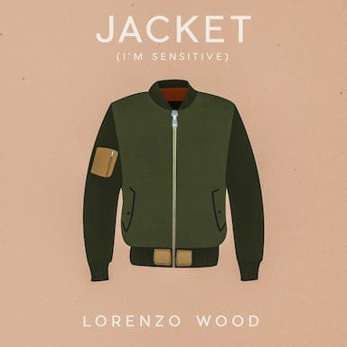

Song: Jacket
Artist: Lorenzo Wood
Song Release Date: May 24, 2019 - EP released October 4, 2019
"Jacket" is a song about how your friends need to support you, even if they don't understand what you're going through.
First released as a single, Lorenzo followed up the song with an EP consisting of several alternative versions:
Vocals, guitars, keyboards, drum & synth production: Lorenzo Wood
- A rock version
- A remix by artist Aendru, who had colloborated in the past when Lorenzo was the featured vocalist in the song "You and Me Now"
- An acoustic-driven duet featuring the singer Kaia, also made into a music video.
Awards
West Coast Songwriters, Palo Alto - Best Song, January 2019; Best Song of the Year 2019.
West Coast Songwriters, Song of the Year finalist, performing at the 2019 West Coast Songwriters Annual Conference
International Songwriting Competition, 2019 Finalist. (They received over 18,000 submissions.)
Press
Young Alameda Musician Releases New Single, Alameda Sun, May 30, 2019
Web Page
Please use this URL to link to "Jacket": https://www.lorenzowoodmusic.com/link/jacket
Additional Links
Aendru on Spotify; his song You and Me Now.
Album Artwork

Link to large image (3000 pixels square):
https://lorenzowoodmusic.com/album_art_3000/jacket.jpg
Link to second large image (3000 pixels square)
Designed by Kyle Wonzen
Music Videos

Music video: https://www.youtube.com/watch?v=iVHF1RM7a9I
Thumbnail image: https://img.youtube.com/vi/iVHF1RM7a9I/maxresdefault.jpg

{kind=link}
{kind=link}
{kind=link}
Lyrics
My friends won’t understand me When I try and tell them why I won’t talk to her anymore Are they not good friends Even if I’m wrong and she’s all in the clear I could still use a bit of support over here Why can’t they take my side while I’m in my head Right now I’m not my best I’m sensitive I don’t have the thickest skin Words cut deeper than you’d think So I’m bracing myself from the wind I’m not good in the cold I need a jacket everywhere While you’re just fine with a T-shirt Living life in the open air But I can’t ‘cause I’m sensitive Oh no It shouldn’t matter what she said to me They should take my word if I don’t want to talk about it They could say it’s gonna be alright Is someone really a friend to me If all they’ve done is judge what I say and I do I guess I need new friends You gotta know I’m trying my best But I’m sensitive I don’t have the thickest skin Words cut deeper than you’d think So I’m bracing myself from the wind I’m not good in the cold I need a jacket everywhere While you’re just fine with a T-shirt Living life in the open air But I can’t ‘cause I’m sensitive Oh oh oh Oh oh oh Oh oh oh You know I’m sensitive I don’t have the thickest skin Words cut deeper than you’d think I’m bracing myself from the wind I’m not good in the cold I need a jacket everywhere You’re just fine with a T-shirt Living life in the open air Well I can’t ‘cause I’m sensitive I'm sensitive, I'm sensitive Well I can't 'cause I'm sensitive